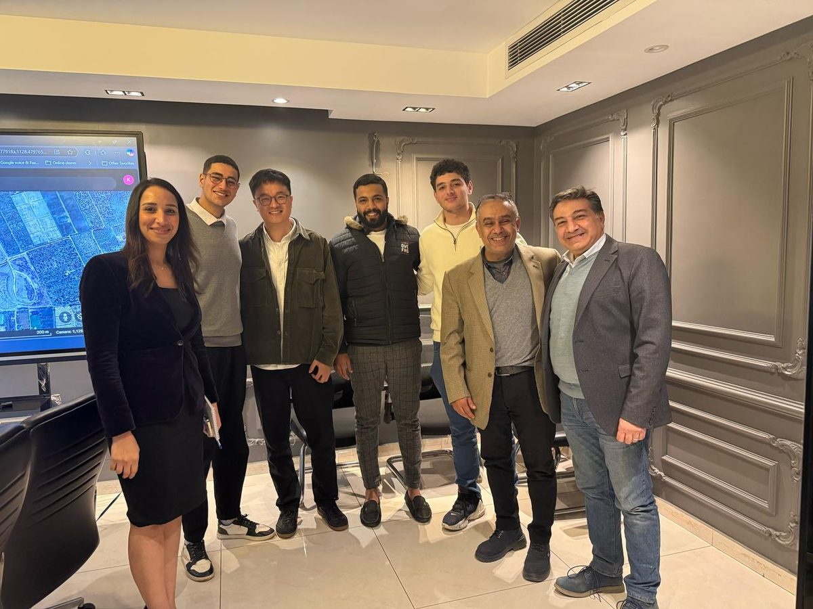
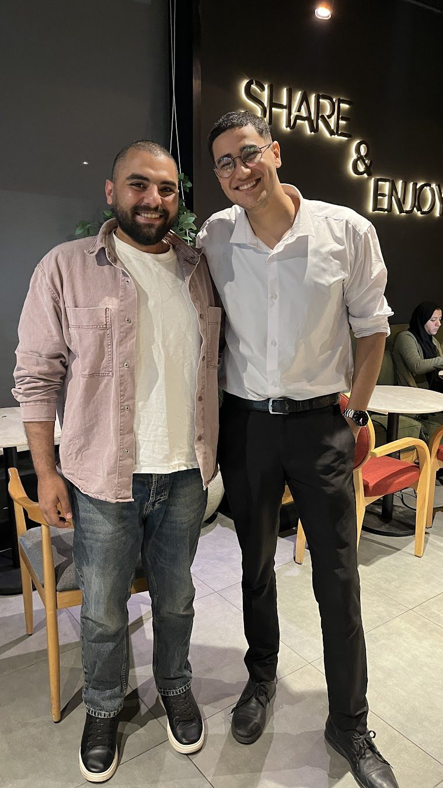
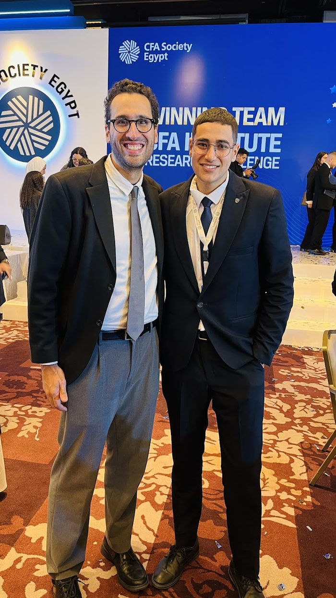
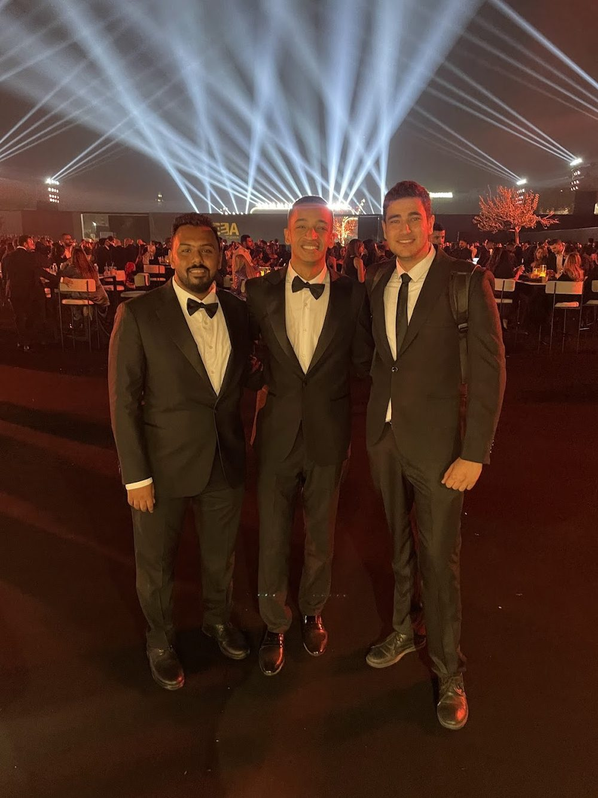
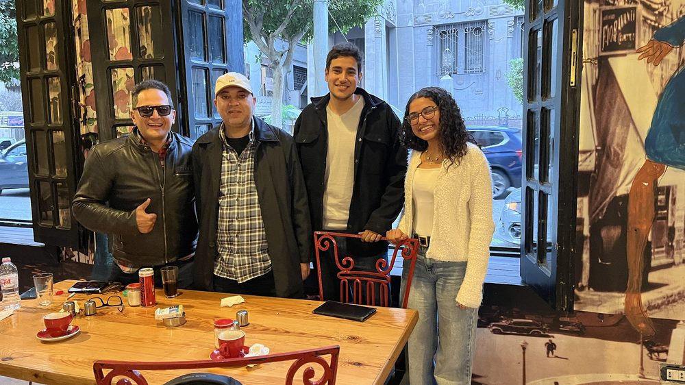

Client names stay confidential under NDA — the methodology, numbers, and outcomes are real.
A Saudi industrial manufacturer presented a financing case built on two different valuation figures across two documents — never reconciled — alongside a claimed second production line with no supporting feasibility study.
Built an independent valuation model from the underlying audited financials, then cross-referenced every figure in the company's own materials against it, flagging discrepancies as they surfaced rather than accepting the headline number.
Comprehensive valuation arrived at a target equity range of SAR 65–85M with a 32.6% IRR and a two-year payback — but only after isolating the contradiction, which materially changed the credibility of the original pitch.
The red flag was surfaced before capital moved. The lesson generalizes: a number that can't be traced to its own supporting document isn't a number yet — it's a claim.

A 100-bed hospital project needed an institutional-grade investor presentation — the kind read by people who evaluate hundreds of healthcare decks a year and forget most of them within a week.
Modeled the underlying valuation first, then designed the 28-slide narrative around what the numbers actually supported — not the other way around. Two QC flags were caught and resolved before the deck left the building: a discount-for-lack-of-marketability contradiction and an unsupported revenue CAGR.
Full three-statement model with sensitivity analysis supporting the SAR 827M enterprise value, stress-tested against occupancy-rate and payer-mix downside scenarios.
The deck reached investors with a defensible, internally consistent valuation. Design quality matters, but only after the model underneath it can survive questioning.

A Saudi trading company had lost over half its equity value across seven years of audited financials, and the prevailing assumption inside the business was that weak consumer demand was to blame.
Built a full bilingual investment review covering 2017–2024, decomposing the P&L line by line rather than accepting the demand narrative at face value.
The data told a different story: gross margins and revenue were largely stable. The actual driver was G&A cost inflation, compounding year over year. A 2025–2030 turnaround model was built around fixing that specific lever.
The correct diagnosis changes the correct remedy entirely — cutting prices to chase demand would have made a cost problem worse. Get the diagnosis right before prescribing anything.

A business process services company preparing for sale needed its balance sheet to reflect true asset value — the existing books understated both equity and fixed assets relative to market reality.
Led financial due diligence on the active sell-side mandate, rebuilding the equity and fixed-asset schedules from source documents and incorporating a formal property revaluation.
The restated position increased the supportable valuation materially, giving the company a defensible position ahead of buyer conversations rather than negotiating from an understated base.
Book value and market value diverge more than most sellers realize — the gap is often sitting in unrevalued real assets, not in the income statement.

A greenfield mass-catering investment needed an investment committee memo robust enough to support a sign-off decision with no operating history to lean on.
Built and iterated the financial model across multiple cash-flow scenarios, running IRR and payback sensitivity against conservative, base, and upside assumptions before presenting any single number as the headline.
Across the scenario range, NPV reached as high as SAR 97.7M with IRR up to 68% in the fastest-payback case — but the memo led with the conservative scenario, not the best one.
An IC memo earns trust by showing the downside scenario as prominently as the upside one. The fastest way to lose a room is to only show them the number you want them to remember.

Demonstrate the same modeling discipline outside the home market — a 56-key boutique hotel acquisition in the US, evaluated as a skills assessment using real monthly income-statement data.
Built a full acquisition model including a GP/LP waterfall distribution structure and IRR hurdle analysis — the standard structure for US real estate private equity deals.
Modeled preferred-return tiers, promote structures, and the resulting LP/GP split across multiple exit-timing scenarios.
The underwriting discipline transfers cleanly across markets and currencies — what changes is the structure convention, not the rigor required to support it.